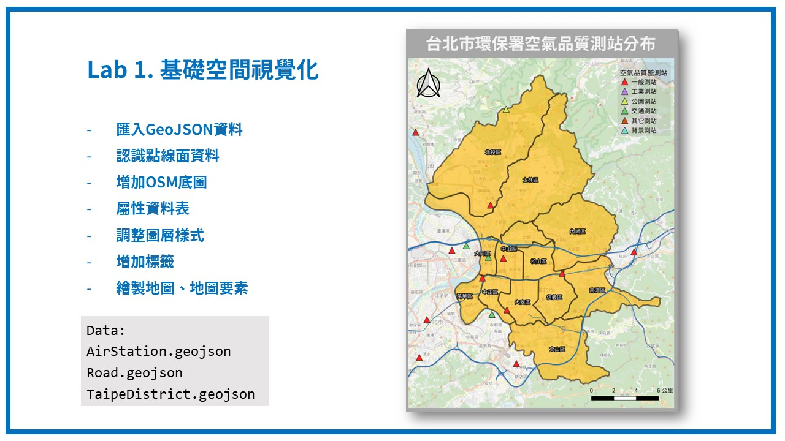
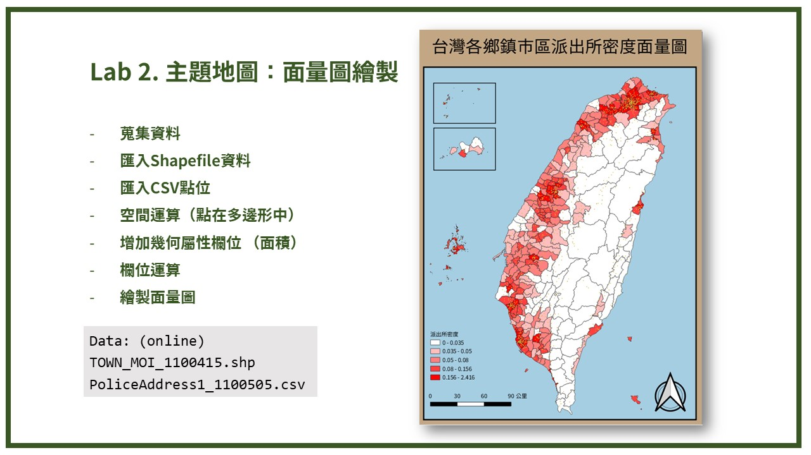
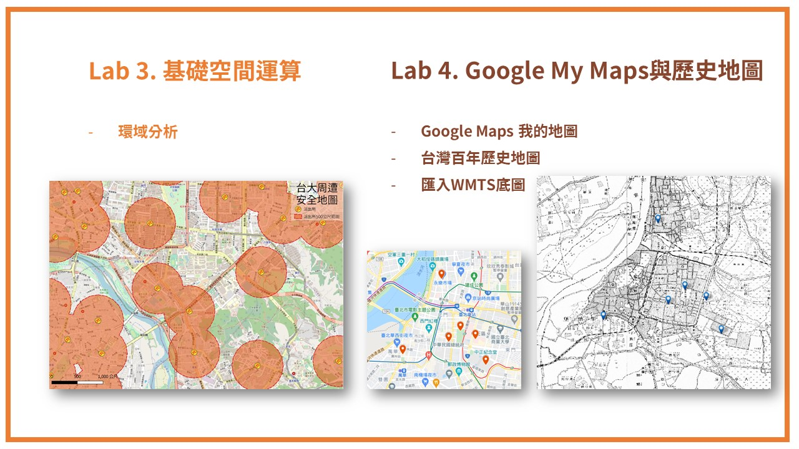
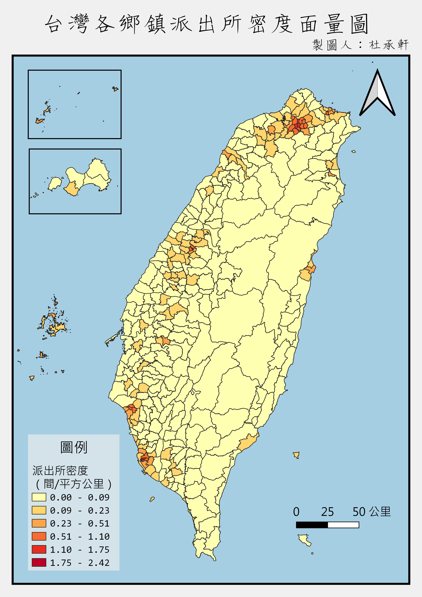
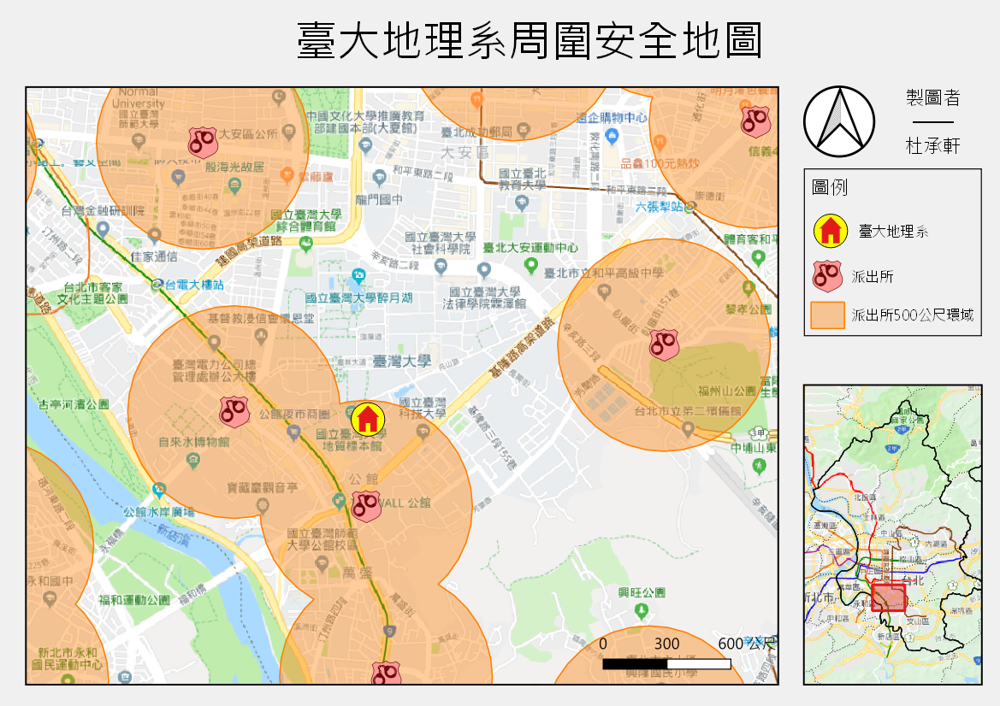
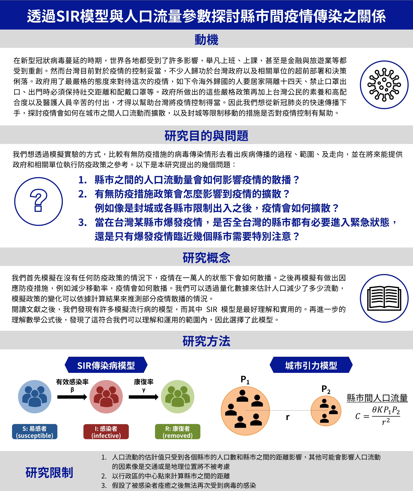
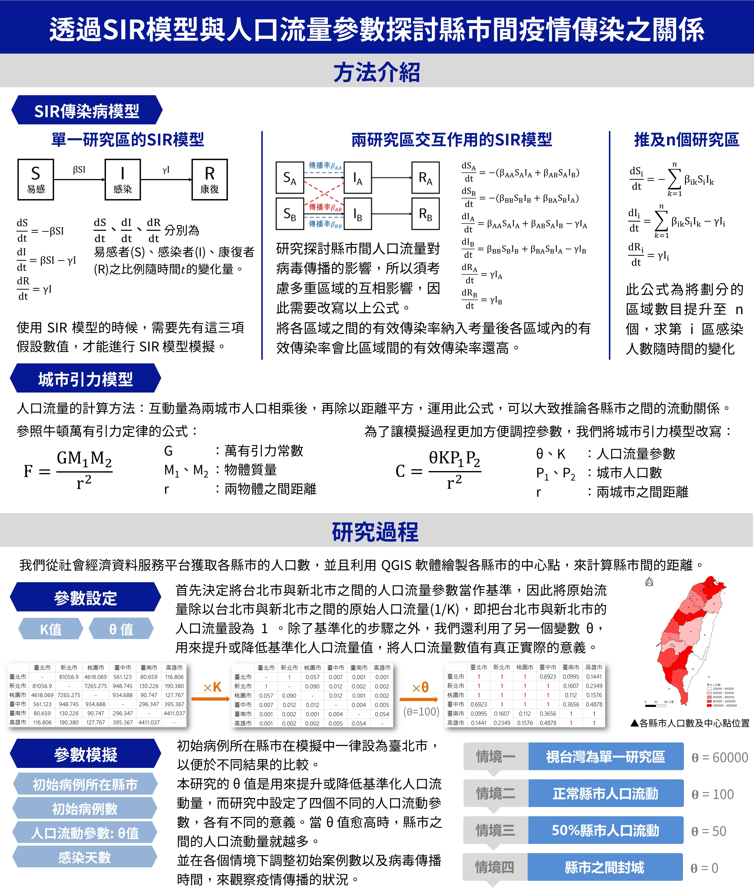
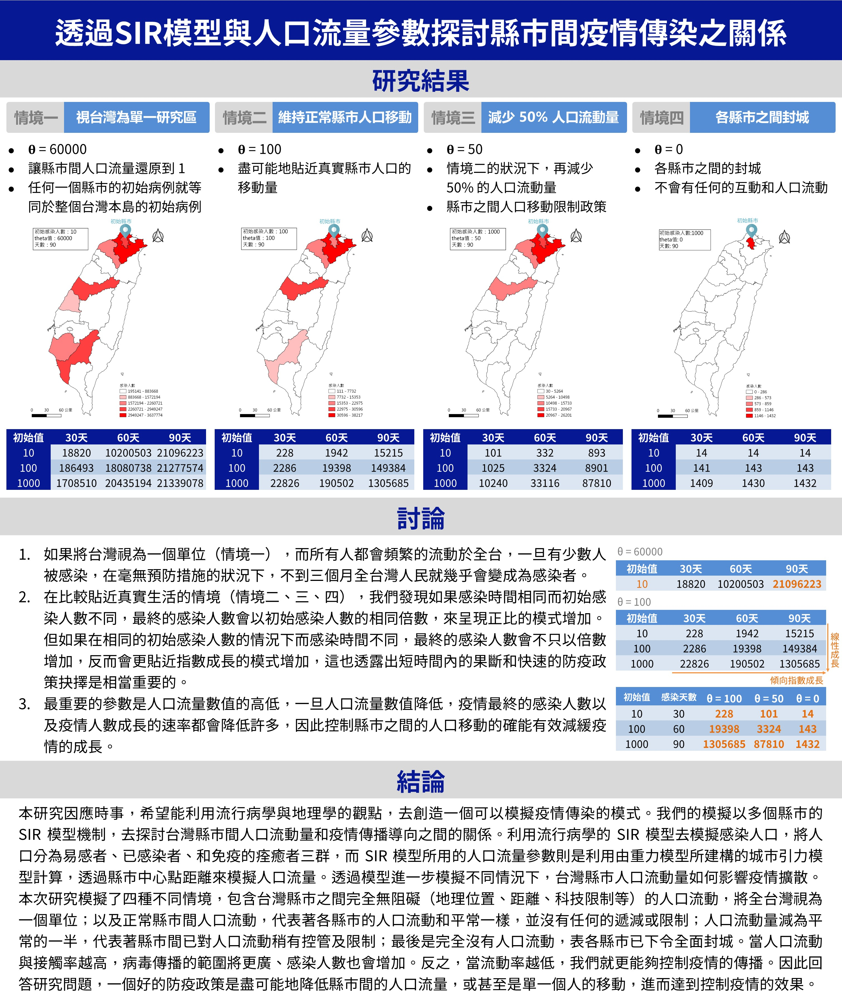

# 地理 # 地理資訊系統 # GIS # 空間資料視覺化
*QGIS 三小時入門課程與實作
相關連結：
109-2學期及110-2學期受邀至台大圖資系開設「數位人文概論」課程，教導如何處理空間資料即進行視覺化。
因此設計三小時的課程及實作，主題為 QGIS 入門操作，提供想學習 QGIS 軟體一個建議的實作範例，並透過投影片及影片的方式一步步教學。
分成三大主題：① 點線面資料初探、空間視覺化、地圖輸出；②：面量圖繪製、匯入Shapefile與CSV點、空間與屬性欄位運算、主題地圖；③：環域分析、Google我的地圖、台灣百年歷史地圖WMTS服務。以下為實作的預期成果地圖。



*QGIS 兩小時入門課程與實作
相關連結：
2019年暑假受邀至台大地理營擔任地圖工作坊講師，教導高中生認識空間資料與地圖，並利用 QGIS 軟體動手實作。因此設計兩小時的課程，讓學員能實際動手操作，並能得到繪製完成的地圖成果。
除了空間資料的教學外，在實作方面分成三大主題：
① 主題地圖繪製：點線面資料呈現、計算點在多邊形數目及計算密度、面量圖繪製、調整地圖樣式、空間視覺化
② 匯入經緯度座標點位、空間運算（環域分析）、介接Google地圖及台灣百年歷史地圖WMTS服務、全覽圖繪製


相關連結：
擔任 107-2學期、108-2學期、109-2學期 空間分析、107-1學期 計量地理學及實習、106-2學期 空間分析方法與應用 之課程助教。此三門課程皆由台大地理系溫在弘教授開設，課程內容與空間資料處理計算，以及 R 程式實作有關，因此建置一網頁平台，將近幾年空間分析相關課程內容彙整，並同時整理歷年考古題與學生作品，方便師生教學及複習所用。
以下內容節錄自空間分析課程平台中。
相關連結：
配合溫在弘《空間分析：方法與應用（二版）》一書之內容，將各章節末的範例實作，透過 R 程式語言，進行空間分析的演練，讓讀者能使用更多元的工具，來處理、分析空間資料。
*參賽學生為：林柏廷、陳頎崴、鄭楷祐（台北市私立復興實驗高級中學）
從 (2021年) 5月中以來，台灣疫情越來越嚴重，由二級警戒提升至全國三級警戒，而又以雙北地區的感染人數最多。因應即將到來的端午連假，許多公眾人物也跳出來呼籲民眾不要返鄉，以減少縣市間的人口移動，進而防止疫情傳播到中南部地區。
本根據COVID-19病毒的傳播模式，我們知道降低移動的頻率、減少人際互動有助於疫情的控制，但是大概要限制到什麼程度，才可以有效抑制疫情呢？去年我們參加地理奧林匹亞的時候，便針對這一個問題進行了深入的探究。現在，我們參考了台大公衛學院陳秀熙教授以及世界衛生組織所推估的參數，根據台灣現狀予以模擬。
透過三個情境的模擬，我們能看出跨縣市移動的人數明顯與疫情傳播狀況有關。外縣市的疫情會與跨縣市的移動流量呈現正比關係。雖然我們的模型有許多簡化，可能無法直接對應現實狀況的疫情數值，但卻能夠從簡單的地理學概念讓大家理解跨境移動帶來的傳播影響。
可以理解端午不返鄉的道理，甚至在目前疫情仍然嚴峻的情況下，能盡量待在原地不要動，對於疫情控制來說就有重要意義。防疫不只是政府的事情，而是每個人的當前要務。做好防疫規定、降低移動頻率（特別是跨縣市），然後在態度上不要抱著僥倖心態，相信我們可以一起挺過眼前艱難的考驗。
*參賽學生為：林柏廷、陳頎崴、鄭楷祐（台北市私立復興實驗高級中學）
在新型冠狀病毒蔓延的時期，世界各地都受到了許多影響，舉凡上班、上課，甚至是金融與旅遊業等都受到重創。然而台灣目前對於疫情的控制妥當，不少人歸功於台灣政府以及相關單位的超前部署和決策俐落。政府用了最嚴格的態度來對待這次的疫情，如下令海外歸國的人要居家隔離十四天、禁止口罩出口、出門時必須保持社交距離和配戴口罩等。政府所做出的這些嚴格政策再加上台灣公民的素養和高配合度以及醫護人員辛苦的付出，才得以幫助台灣將疫情控制得當。因此我們想從新冠肺炎的快速傳播下手，探討疫情會如何在城市之間人口流動而擴散，以及封城等限制移動的措施是否對疫情控制有幫助。
本研究因應時事，希望能利用流行病學與地理學的觀點，去創造一個可以模擬疫情傳染的模式。我們的模擬以多個縣市的SIR 模型機制，去探討台灣縣市間人口流動量和疫情傳播導向之間的關係。利用流行病學的 SIR 模型去模擬感染人口，將人口分為易感者、已感染者、和免疫的痊癒者三群，而 SIR 模型所用的人口流量參數則是利用由重力模型所建構的城市引力模型計算，透過縣市中心點距離來模擬人口流量。透過模型進一步模擬不同情況下，台灣縣市人口流動量如何影響疫情擴散。
本次研究模擬了四種不同情境，包含台灣縣市之間完全無阻礙（地理位置、距離、科技限制等）的人口流動，將全台灣視為一個單位；以及正常縣市間人口流動，代表著各縣市的人口流動和平常一樣，並沒有任何的遞減或限制；人口流動量減為平常的一半，代表著縣市間已對人口流動稍有控管及限制；最後是完全沒有人口流動，表各縣市已下令全面封城。當人口流動與接觸率越高，病毒傳播的範圍將更廣、感染人數也會增加。反之，當流動率越低，我們就更能夠控制疫情的傳播。因此回答研究問題，一個好的防疫政策是盡可能地降低縣市間的人口流量，或甚至是單一個人的移動，進而達到控制疫情的效果。
更多詳細資訊：



相關連結：
這是一個公民科學計畫，由一群具有地理學、人類學、公共衛生、資料科學、資訊科學以及視覺設計等學識專業的老師利用課餘時間，帶領幾位中學生一同執行。
在2021年五月，台灣爆發本土 COVID-19 疫情，急需疫情儀表板客觀地展示即時資訊。與其他儀表板不同的是，我們不僅即時彙整訊息，還應用地理資訊系統呈現政府提供的開放資料。值得一提的是，因為人有性別、年齡之分，所以在這個儀表板中，我們特別將這些疫情中的差異顯現出來。
在這個儀表板中，疫情面貌與醫療量能是我們主要呈現的內容。由於我們在彙整訊息的過程中發現許多值得深入探究的議題，因此便另開一頁將我們的觀察、討論呈現其上。另外，台灣正在面對的問題，基本上都可借鑑國外經驗。也因為這樣，我們回顧了一些期刊論文，作為應對疫情時的經驗參考。
幾位中學生在此計畫中扮演著相當重要的角色。中學生們不只是協助資料建置的工作，同時間也學習應用地理資訊系統，並且在這基礎上固定與老師們線上會談，共同推動進度。
這個計畫將會即時更新訊息，並且視疫情發展情況，在資料整理、分析與展示過程中做出必要的調整。
🥇 Hollywood in Taiwan - The Story of Taiyupian (Taiwanese-dialect Films)
林其磊（康橋國際雙語學校）
2017年：獲得第一名
宋培瑀、王相翊、姚舒瀚（私立復興實驗高級中學）
2018年：獲得第二名
🥉 都市綠地的歇落 ── 新店十四張的都更建構與居民地方感變遷
林宇寬、張晉瑀、黃克桓（私立普台高級中學）
2020年：獲得第三名
曾蕷家、陳鼎元、陳鼎穎、曾元庠（私立復興實驗高級中學、康橋國際雙語學校）
2021年：獲得第四名
許浩軒、賴世依、周宥彤、呂承泰（林口康橋國際高中）
2024年：獲得優選
李旻恩、謝宜珈、林彥佑、李偉祺（私立普台高級中學）
2024年：獲得優選
宋旻儒、葉哲綸、安禹丞、游辰希（林口康橋國際高中）
2025年：獲得優選